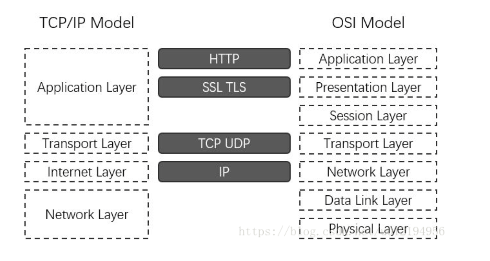

基本概念：
HTTP，全称为 HyperText Transfer Protocol，即为超文本传输协议。是互联网应用最为广泛的一种网络协议
所有的 www 文件都必须遵守这个标准。
http特性：
HTTP 是无连接无状态的
HTTP 一般构建于 TCP/IP 协议之上，默认端口号是 80
HTTP 可以分为两个部分，即请求和响应。http请求：
HTTP 请求由 3 个部分构成，分别是：状态行，请求头(Request Header)，请求正文。
HTTP 定义了与服务器交互的不同方式，最常用的方法有 4 种
分别是 GET，POST，PUT， DELETE。URL 全称为资源描述符，可以这么认为：一个 URL 地址对应着一个网络上的资源，而 HTTP 中的 GET，POST，PUT，DELETE 就对应着对这个资源的查询，修改，增添，删除4个操作。http相应：
HTTP 响应由 3 个部分构成，分别是：状态行，响应头(Response Header)，响应正文。
HTTP 响应中包含一个状态码，用来表示服务器对客户端响应的结果。状态码一般由3位构成：
1xx : 信息，服务器收到请求，需要请求者继续执行操作。
2xx : 成功，操作被成功接收并处理。
3xx : 重定向，需要进一步的操作以完成请求。
4xx : 客户端错误，请求包含语法错误或者无法完成请求。
5xx : 服务器错误，服务器在处理请求的过程中发生了错误。HTTP状态码
当用户访问一个网页时，浏览器会向网页所在的服务器出请求，当浏览器接收并显示网页前，此网页所在服务器会返回一个包含HTTP状态码的信息头（server header）用以响应浏览器的请求，HTTP状态码用于描述服务器对请求的处理结果。
比如常见的状态码：
200 OK 客户端请求成功。
301 Moved Permanently 请求永久重定向。
302 Moved Temporarily 请求临时重定向。
303 See Other 临时性重定向，且总是使用 GET 请求新的 URI。
304 Not Modified 自从上次请求后，请求的网页未修改过，可以直接使用缓存的文件。
400 Bad Request 由于客户端请求有语法错误，不能被服务器所理解。
401 Unauthorized 请求未经授权，无法访问。
403 Forbidden 服务器收到请求，但是拒绝提供服务。服务器通常会在响应正文中给出不提供服务的原因。
404 Not Found 请求的资源不存在，找不到如何与 URI 相匹配的资源,比如输入了错误的URL。
500 Internal Server Error 最常见的服务器端错误,服务器发生不可预期的错误，导致无法完成客户端的请求。
503 Service Unavailable 服务器当前不能够处理客户端的请求，在一段时间之后，服务器可能会恢复正常(可能是过载或维护)。一次完整的HTTP事务流程
（1）域名解析
（2）发起TCP的三次握手
（3）建立TCP连接后发起http请求
（4）服务器响应http请求，浏览器得到HTML代码
（5）浏览器解析HTML代码，并请求HTML代码中的资源
（6）浏览器对页面进行渲染呈现给用户
（7）连接结束一个页面从输入 URL 到页面加载显示完成，这个过程中都发生了什么？（流程说的越详细越好）
详细版：
（1）浏览器会开启一个线程来处理这个请求，对 URL 分析判断如果是 http 协议就按照 Web 方式来处理;
（2）调用浏览器内核中的对应方法，比如 WebView 中的 loadUrl 方法;
（3）通过DNS解析获取网址的IP地址，设置 UA 等信息发出第二个GET请求;
（4）进行HTTP协议会话，客户端发送报头(请求报头);
（5）进入到web服务器上的 Web Server，如 Apache、Tomcat、Node.JS 等服务器;
（6）进入部署好的后端应用，如 PHP、Java、JavaScript、Python等，找到对应的请求处理;
（7）处理结束回馈报头，此处如果浏览器访问过，缓存上有对应资源，会与服务器最后修改时间对比，一致则返回304;
（8）浏览器开始下载html文档(响应报头，状态码200)，同时使用缓存;
（9）文档树建立，根据标记请求所需指定MIME类型的文件（比如css、js）,同时设置了cookie;
（10）页面开始渲染DOM，JS根据DOM API操作DOM,执行事件绑定等，页面显示完成。简洁版：
（1）浏览器根据请求的URL交给DNS域名解析，找到真实IP，向服务器发起请求；
（2）服务器交给后台处理完成后返回数据，浏览器接收文件（HTML、JS、CSS、图象等）；
（3）浏览器对加载到的资源（HTML、JS、CSS等）进行语法解析，建立相应的内部数据结构（如HTML的DOM）；
（4）载入解析到的资源文件，渲染页面，完成。用什么解析成IP
从网址到IP地址的转换，称为DNS解析，DNS解析是一个递归查询的过程，具体步骤如下（以www.google.com为例）：
（1）首先在本地域名服务器（最近的一台DNS服务器）中查询IP地址
（2）如果没有找到，本地域名服务器会向根域名服务器发送一个请求
（3）如果根域名服务器中也不存在该域名，但判定这个域名属于“com”域，则本地域名服务器会向com顶级域名服务器发送一个请求
（4）如果com顶级域名服务器没有找到该域名，但判定这个域名属于“google.com”域，则本地域名服务器会向google.com域名服务器发送一个请求，以此类推
（5）直到本地域名服务器得到域名对应的IP地址，并将其缓存到本地，供下次查询使用
（6）综上，网址的解析过程为.->.com->google.com->www.google.com.。HTTP和HTTPS的区别
HTTP（Hyper Text Transfer Protocol，超文本传输协议）被用于在web浏览器和网站服务器之间传递信息，HTTP协议以明文的方式发送内容，不提供任何方式的数据加密，如果攻击者截取了web浏览器和网站服务器之间的传输报文，就可以直接读懂其中的信息，因此，HTTP协议不适合传输一些敏感信息，比如：信用卡号，密码等支付信息。
HTTPS（Hyper Text Transfer Protocol over Secure Socket Layer，安全套接字超文本传输协议），为了数据传输的安全，HTTPS在HTTP的基础上加入了SSL/TLS，依靠证书来验证服务器的身份，并为浏览器和服务器之间的通信加密。其中SSL（Secure Socket Layer，安全套接层），TLS（Transport Layer Securit，传输层安全协议），SSL 3.0和TLS 1.0差别很小，在HTTPS通信中具体使用哪一个还要看客户端和服务端的支持程度，二者在网络模型中位于哪一层？

区别：
（1）HTTPS协议需要CA申请证书，一般免费证书比较少，所以需要一定费用
（2）HTTP是超文本传输协议，信息室明文传输，HTTPS则是具有安全性的SSL加密传输协议
（3）HTTP和HTTPS使用的是完全不同的连接方式，使用的端口号也不一样，前者是80，后者是443
（4）HTTP连接很简单，是无状态的；HTTPS协议是由HTTP+SSL协议构建的可进行加密传输、身份认证的网络协议，比较安全。
（5）谷歌搜索引擎算法中，比起同等HTTP网站，采用HTTPS加密的网站在搜索结果中排名会更高如何从HTTP切换到HTTPS
（1）需要将页面中所有的链接（例如js,css,图片等链接）都由http改为https
（2）一般情况下会建议保留HTTP，所以在切换的时候可以做HTTP和HTTPS的兼容，具体实现方式是：去掉页面连接中的http头部，这样恶意自动匹配HTTP头和HTTPS头客户端使用HTTPS方式与web服务器通信的步骤：
（1）客户使用HTTPS的URL访问web服务器，要求与web服务器建立SSL连接
（2）web服务器收到客户端请求后，将网站的证书信息（证书中包含公钥）传送一份给客户端
（3）客户端的浏览器与web服务器开始协商SSL连接的安全等级，也就是信息的加密等级
（4）客户端的浏览器根据双方同意的安全等级，建立会话秘钥，然后利用网站的公钥将会话秘钥加密，并传送给网站
（5）web服务器利用自己的私钥解密出会话秘钥
（6）web服务器利用会话秘钥加密与客户端之间的通信原文链接：https://blog.csdn.net/u012194956/article/details/79110212